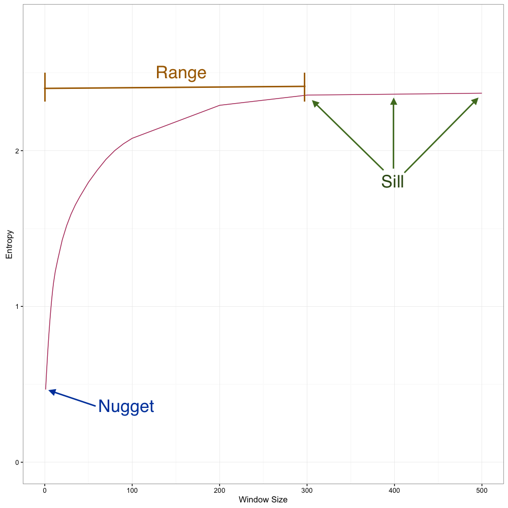
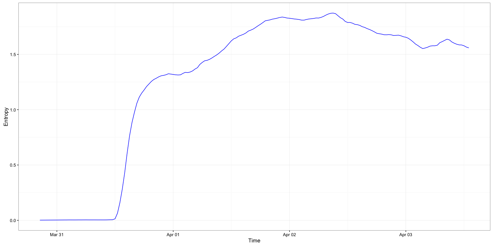

Order and Complexity Through Time and Space in r/Place
During the weekend of April 1st, 2017, the website reddit conducted an extraordinary experiment. They created a bitmap canvas measuring 1000 by 1000 pixels in a subreddit called r/place, which they let users edit. The only catch was that users could only edit one pixel at a time, and they had to wait several minutes between changing a pixel. This meant that no single user could create a picture- it would take two hours to change about a dozen pixels. Plus, while you are making your 5x5 pixel image over the course of a whole afternoon, there was nothing to stop someone else from editing those pixels as well and ruining your patient efforts.
Thus, all of the images in pictures had to be collaborative, and the early images were entirely uncoordinated and emerged organically. It was incredibly exciting to watch in real time as factions arose and staked out territory, turf wars were fought, and ultimately thousands of images were created across a giant canvas. Many other folks wrote up articles describing r/place, for example here and here, and an atlas of the final product was even created. Reddit did a data dump releasing all of their data, in the form of a table documenting the time, location and color of every pixel change during the 3 days and 16 hours that r/place was live. I decided to do an analysis of the data, to see if I could somehow demonstrate or quantify the emergent complexity of r/place.
Analysis
The first thing I had to do was transform the data from a giant table into rasters - a spatial data type that it is an easy format for conducting spatial analyses. I did this with a BigQuery script that got the exact state of the canvas at a given time, and ran this script for every 30-minute interval that the canvas was changing. Using the output, I created rasters for each of these 30-minute snapshots.One of the most useful tools for geographers when seeking to quantify spatial phenomena is the variogram (also known as a semi-variogram). A variogram is a graph that shows how similar near things are to each other, and how far you have to go before things start to become very different. They are necessary for techniques like kriging and can provide a quick visual summary of a whole scene. However, normal variograms are for continuous numeric data, and most built-in packages for creating variograms expect this kind of data. Continuous numeric data is great for most geospatial phenomena, but wouldnt work well for a raster with 16 distinct categories. I decided that an interesting value to look at over space and time would be shannon entropy, as it would capture order and disorder within r/place. I set up a server on Google Cloud and wrote a script get the average the shannon entropy of the pixels within thousands of sample windows across various sizes. I then created variogram-esqe graphs for every half-hour snapshot. Much like a variogram, these plots have a nugget, a range, and a sill.
Here is an example variogram:  The nugget is the value at the smalled window size, and in this case would be 0.5 - meaning that the average entropy of the smallest possible (2x2) window would be 0.5. The sill, on the other hand, is the value at which the variogram plateaus, and in this case is about 2.3. Because r/place has 16 possible collors, 2.8 is the maximum entropy possible, which r/place somewhat close to during this during this time period. Because certain colors are preferred (like blue and white) and others are dispreferred (like purple and orange), the canvas never quite reaches maximum entropy. Finally, the range is the distance to the sill, which is about 300 for this graph. This is quite significant - this means that even within fairly some fairly large windows of up to 300x300 pixels, the pixels are more similar to each other than within the entire canvas. In other words, there are some images (or at least coherent areas) that are about 300x300 pixels during this snapshot.
{kind=link}
Results
Here is a gif showing each snapshot of r/place, as well as the variogram for that snapshot. Initially, the canvas is nearly uniformly white, and the entropy is the same at all spatial scales. A 5x5 window will have low entropy, as will a 100x100 window, since the majority of the cells are white. As the canvas fills up, the entropy shoots up, and variograms quickly form an expected shape, with a nugget, sill and a range.
Initially, the canvas is nearly uniformly white, and the entropy is the same at all spatial scales. A 5x5 window will have low entropy, as will a 100x100 window, since the majority of the cells are white. As the canvas fills up, the entropy shoots up, and variograms quickly form an expected shape, with a nugget, sill and a range.
Watching the variogram morph an wiggle as the canvas evolves, looking at the variogram components, two interesting trends are discernable: Entropy decreases during the last 36 hours, and the range gets smaller over time.
Entropy Decreases at the End
Entropy at all window sizes shoots up, peaks, and then decreases. This means that r/place passed a point of maximum disorder as the canvas filled up, factions fought over territory, and vandals attacked artwork. As it matured, nearly every pixel was absorbed into an image and vandalization was cleaned up. This is cleaning up is clearly shown in how the nugget declined over time, as 2x2 windows are less and less likely to contain multiple colors. This decrease in entropy during the last day is apparent at all scales, however. Below is a graph of entropy over time for a window of 30x30 pixels, showing the decrease in entropy over the last day. Interestingly, while the overall trend is a decline in entropy for the last 36 hours or so, there is a slight uptick at the end, perhaps as final battles are fought over areas like the OSU logo and the american flag. {kind=link}
The range decreases over time
Initially, the variograms have a broad arc from the lower left corner to the upper right corner, and never fully level off. Gradually, the curve in the arch gets sharper, the sill becomes more defined, and the range contracts. This captures how the average image size declined and more images were created as the canvas developed - from the giant blue corner and green lattice initially, to lots of small micro-images scattered throughout the final canvas. As the number of images increases, it is increasingly less likely for a large window to contain multiple similar colors, and thus the entropy within that window increases. This processes shrinks the range of the variogram.Conclusion
It is difficult to measure complexity. We can know intuitively if something exhibits the characteristics of complexity - some scholars, inspired by the Turing test, have even proposed a subjective test to assess if a phenomenon is truly complex and emergent. However, there is no standard method to measure complexity and order in a way that is easily comparable. Watching r/place develop and evolve over the weekend, I was certainly stunned at how complex and ornate it became, as were many other reddit users. The purpose of this analysis was to try to explore and describe mathematically the complexity that occurred.As a proxy for complexity, I measured order, using shannon's entropy, at various spatial and temporal scales. As r/place grew, the entropy predictably increased. However, after a peak, the entropy began to decrease over the last 36 hours of r/place. Examining the spatial scales at which the entropy was decreasing, however, shows that the canvas was not getting simpler. Rather, it was getting more ordered. In fact, it was becoming more ornate and more images were being added. The fact that these twin processes - decreasing entropy with an increasing number of images - occurred at the same time demonstrate just how complex r/place become. Given that users could only change one pixel every ten minutes, and the majority acted with little coordination or planning, the emergent complexity of r/place is quite astonishing.